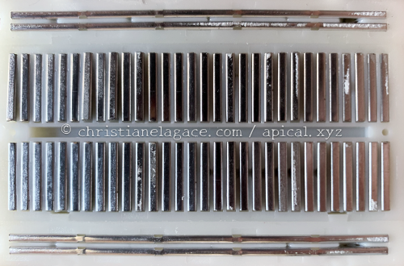
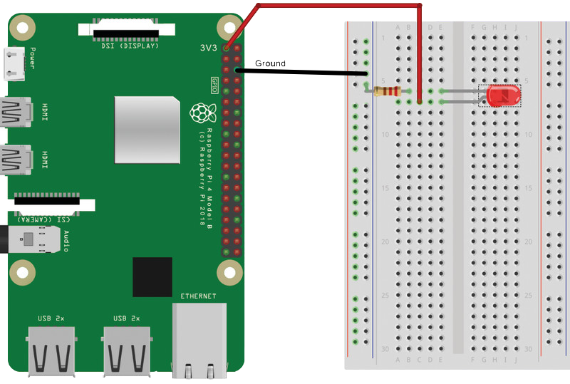
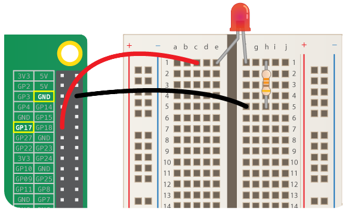
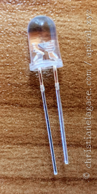
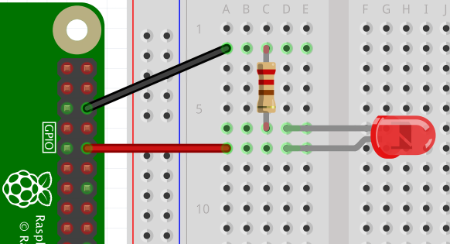
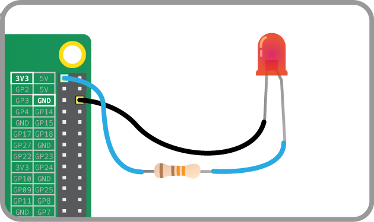
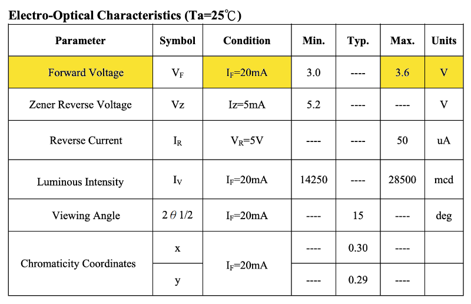

46. GPIO¶
46.1 En résumé...¶
Voici un résumé des informations essentielles du ou des prochains chapitres.
Notez que certaines fiches, qui font partie intégrante du cours, pourraient ne pas figurer dans ce résumé.
Je vous recommande d'effectuer une lecture de l'ensemble des fiches de ces chapitres afin de bien saisir les enjeux.
Qu est-ce que le gpio¶
Le sigle GPIO signifie General Purpose Input Output (littéralement : Entrée-sortie à usage général).

Il existe deux systèmes de numérotation : physique et broadcom (Broadcom SOC channel : BCM).

Brancher une del au raspberry pi¶
La planche de maquettage :

Dos de la planche de maquettage :

Ça prend toujours une résistance pour protéger la DEL et le Raspberry Pi.
Sans entrer dans les détails de calcul, disons qu'une résistance de 330 ohm est un bon passe partout pour un petit montage avec une seule DEL.
Exemple de branchement avec tension de 3.3V :

Exemple de branchement sur une broche programmable :

Important ! Sens de la DEL :
- Longue patte (moins de matériel dans le bulbe) : côté tension (power)
- Courte patte : côté mise à terre (GND)


La base des scripts avec rpi gpio¶
Il y a un chapitre de référence sur Python au début de la formation.
Le script doit être placé directement sur le Raspberry Pi pour être exécuté. Si vous l'avez écrit sur votre ordinateur, vous devrez le copier sur le Pi après l'avoir édité.
Nom du fichier : entièrement en minuscules (ex : monscript.py) ou casse serpent (ex : mon_script.py).
Petit script qui fait clignoter une DEL jusqu'à ce que quelqu'un appuie sur Ctrl+C.
Python
#!/usr/bin/env python3
# -\*- coding:utf-8 -\*-
"""
Fait clignoter une DEL rouge sur le Raspberry Pi
Paramètres : aucun
Montage : DEL rouge branchée sur GPIO.BCM 23 et résistance de 330 Ohms
Auteur : Christiane Lagacé
Date : 17 septembre 2025
"""
import RPi.GPIO as GPIO # il faudra mettre GPIO. devant le nom des classes du paquet
from time import sleep # les classes du paquets peuvent être utilisées directement sans le nom du paquet
GPIO.setmode(GPIO.BCM) # type d'adressage broadcom (numéros de ports)
led = 23 # adresse broadcom du branchement de la DEL
GPIO.setup(led, GPIO.OUT) # sens du signal : le Pi peut envoyer un signal à sa broche (ici, au port 23)
print('Programme qui fait clignoter une DEL')
print('Appuyez sur Ctrl+C pour terminer.')
try:
while True:
GPIO.output(led, 1) # envoie 3.3V au port
sleep(1)
GPIO.output(led, 0) # n'envoie rien au port
sleep(1)
except KeyboardInterrupt:
print ('Fin du programme, vous avez appuyé sur Ctrl+C.')
except Exception as e:
print('Une exception est survenue.' + str(e))
finally:
GPIO.cleanup() # réinitialise les ports
print('Nettoyage final réalisé avec succès!')
Exécution du script :
Terminal
Lancer un script python avec le plugin script¶
Voir détails sur la fiche.
46.2 Qu'est-ce que le GPIO?¶
Le sigle GPIO signifie General Purpose Input Output (littéralement : Entrée-sortie à usage général).
Il s'agit d'une série de 40 broches (en anglais : pins) qui permettent de contrôler différents composants électroniques.
Un circuit électronique pourra être réalisé en branchant des composants électroniques sur des broches ciblées du GPIO. Les branchements seront réalisés à l'aide de fils spécialisés appelés câbles DuPont.
Notez que pour les modèles qui ont précédé le Raspberry Pi 1B+ (2014), le GPIO n'avait que 26 broches. Et pour le Raspberry Pi Zero, il y a 40 trous auxquels les broches peuvent être soudées.
Schéma des broches¶
Certaines broches jouent un rôle particulier. Il faut se référer au schéma officiel du GPIO1 pour connaître leur rôle.
L'application Web Raspberry Pi Pinout (https://pinout.xyz/) est également très aidante.
Attention : il existe deux systèmes de numérotation : physique et broadcom (Broadcom SOC channel : BCM).
Dans le schéma qui suit, les numéros 1 à 40 réfèrent à la numérotation physique. Vous remarquerez que certaines broches, par exemple la 11, sont libellées GPIO 17. Dans ce cas, 17 correspond à la numérotation broadcom.
La numérotation physique permet de retrouver la bonne broche sur le Pi. La numérotation broadcom sera souvent utilisée en programmation.
Source de l'image : https://www.raspberrypi.org/documentation/usage/gpio/
Tension des broches¶
Les broches qui permettent de fournir une source électrique (power) à un composant travaillent avec une tension de 5V ou de 3.3V.
Les autres broches travaillent avec une tension de 3.3V. Attention : si vous leur envoyez 5V, vous allez briser le GPIO et peut-être même le Pi au complet. Ouch $$__$$
Lorsqu'une broche reçoit une tension suffisamment haute (ex : 3.3V), son état est à 1 (ON). Sinon, elle est à 0 (OFF).
L'état d'une broche peut être contrôlé par programmation avec des langages comme le Python, le JavaScript et bien d'autres.
Le branchement d'un composant électronique sur une planche de maquettage puis au GPIO est expliqué dans la fiche « brancher_une_del_au_raspberry_pi ».
Source¶
- « GPIO ». Raspberry Pi. https://www.raspberrypi.org/documentation/usage/gpio/
Pour plus d'information¶
« General Purpose Input/Output ». Wikipédia. https://fr.wikipedia.org/wiki/General_Purpose_Input/Output
« GPIO ». Raspberry Pi. https://www.raspberrypi.org/documentation/usage/gpio/
« Raspberry Pi GPIO Pinout: What Each Pin Does on Pi 4, Earlier Models ». Tom's hardware. https://www.tomshardware.com/reviews/raspberry-pi-gpio-pinout,6122.html
« Allumer et éteindre une LED avec la Raspberry Pi et Python ». Raspberry Pi FR. https://raspberry-pi.fr/led-raspberry-pi/
« Raspberry Pi Pinout ». Raspberry Pi Pinout. https://pinout.xyz/
46.3 Brancher une DEL au Raspberry Pi¶
Si vous branchez une petite diode électroluminescente (DEL, en anglais light-emitting diode ou LED) au GPIO de votre Raspberry Pi, votre système domotique pourrait par exemple allumer la DEL quand quelqu'un entre dans la pièce.
Ce type de composant électronique est peu dispendieux. Vous trouverez des DEL à deux pattes en vente pour environ 10$ le paquet de 100.

Travail avec une planche de maquettage¶
Une planche de maquettage (aussi appelée platine d'essai, platine de prototypage ou, en anglais, breadboard) est un petite plaque de plastique munie de trous dans lesquels il est possible de brancher des composants électroniques sans nécessiter de soudure. Les trous de chaque rangée sont reliés entre eux par une plaque métallique, ce qui permet de former un circuit électronique.
Saviez-vous que le terme breadboard vient effectivement d'une planche pour découper du pain? C'est que dans les premiers temps où l'électronique s'est développée, des gens utilisaient une vraie planche à pain sur laquelle ils vissaient les composants électronique de leur montage1!
Vous pouvez faire le montage de la DEL et d'une résistance sur une planche de maquettage branchée au GPIO à l'aide de fils appelés câbles DuPont. On utilisera ici des câbles mâle-femelle avec l'extrémité mâle branchée à la planche de maquettage et l'extrémité femelle branchée au GPIO.
Montage A
Source de l'image : https://magpi.raspberrypi.org/articles/get-started-with-electronics-and-raspberry-pi
Précautions lors du montage¶
Il est important de couper le courant du Raspberry Pi avant d'effectuer les branchements. Sinon, vous risquez d'endommager le composant électronique, le GPIO ou même le Raspberry Pi.
Les fils du circuit¶
La couleur des fils utilisés pour brancher les composants sur la planche de maquettage n'a pas d'importance.
Cependant, par convention, on utilisera un fil noir pour brancher à la mise à terre (ground ou GND).
Sur la planche de maquettage, le fil de mise à terre sera généralement – mais pas obligatoirement – branché dans le rail d'alimentation négatif.
Les rails d'alimentation sont les deux premières et les deux dernières rangées de trous sur le côté long de la planche de maquettage. Le rail négatif est généralement marqué d'une ligne bleue ou noire.
Sur certaines planches, le sens des raccordements internes est visible lorsqu'on retire la feuille de protection arrière.
Branchement d'une DEL¶
Lorsque vous branchez une DEL, il ne faut pas que les deux pattes soient branchées sur des trous qui sont interconnectés. On pourra les brancher, par exemple :
- sur deux barrettes de raccordement différentes (voir montage A)
- une patte le rail positif (ou négatif) et l'autre, sur une barrette de raccordement au centre (voir montage B)
- de chaque côté de la goutière, c'est-à-dire la partie encavées au centre (voir montage C)
Lors du branchement de la DEL, assurez-vous que la longue patte soit branchée du côté de la source de tension (power). La patte la plus courte sera branchée du côté de la mise à terre.
Si vous avez de la difficulté à déterminer quelle est la patte la plus longue (c'est parfois le cas après qu'une soudure ait été faite), regardez à l'intérieur du bulbe. La patte longue (à gauche sur les images) a généralement moins de matériel que la courte.
Donc, le côté avec moins de matériel dans le bulbe (la patte la plus longue) doit être branché du côté de la source de tension.
Montage B
Emplacement de la résistance¶
Dans un petit circuit qui implique seulement une DEL et une résistance, la résistance peut être placée de n'importe quel côté de la DEL.


Circuits réalisés à l'aide du logiciel Fritzing.
Notez que dans ce type de circuit, une résistance de 330 Ohms est une valeur sûre. Si vous désirez en savoir plus sur les résistances, consultez la fiche « les_resistances ».
Broche 3.3V vs broche programmable¶
Vous devez déterminer quelle broche du GPIO fournira la tension à votre circuit.
Avec un branchement directement sur la broche no 1 (3V3 power), comme sur le montage A, la DEL s'allumera dès que le Raspberry Pi sera sous tension.
Si vous préférez allumer la DEL par programmation, il faudra brancher sa longue patte sur une autre broche du GPIO, par exemple la broche 17, comme sur le montage C.
Il faudra alors écrire un petit programme qui enverra ou non un signal à cette broche, par exemple en utilisant la bibliothèque RPi.GPIO.
Montage C
Source de l'image : https://www.futurelearn.com/courses/physical-computing-raspberry-pi-python/0/steps/76169
Branchement sans planche de maquettage¶
Si vous préférez, il est même possible de brancher la DEL et sa résistance directement au GPIO. Pour effectuer ce branchement, les câbles DuPont auront des extrémités femelle-femelle.
Un peu de soudure sera nécessaire entre la DEL et la résistance.

Source de l'image : https://projects.raspberrypi.org/en/projects/physical-computing-with-scratch/3
Source¶
- « Use a Real Bread-Board for Prototyping Your Circuit ». Instructables Circuits. https://www.instructables.com/Use-a-real-Bread-Board-for-prototyping-your-circui/
Pour plus d'information¶
« Get started with electronics and Raspberry Pi ». The MagPi Magazine. https://magpi.raspberrypi.org/articles/get-started-with-electronics-and-raspberry-pi
« Breadboard tutorial: learn electronics with Raspberry Pi ». The MagPi Magazine. https://magpi.raspberrypi.org/articles/breadboard-tutorial
« LED ». Framboise 314. https://www.framboise314.fr/scratch-raspberry-pi-composants/led/
« Introduction aux circuits ». CCDMD - Apprendre à programmer pour rendre des objets connectés à Internet à l’aide des plateformes Arduino et Raspberry PI. https://objets.ccdmd.qc.ca/manuel/2-1-introduction-aux-circuits/
46.4 Les résistances¶
Dans tout circuit électronique qui comporte une DEL, il faut ajouter une résistance. Ceci assure que le courant ne grillera pas la DEL, le GPIO ou même le Raspberry Pi.
Généralement, les tensions maximales supportées parr les DEL (forward voltage) sont de1 :
- DEL blanche : 3.3V
- DEL bleue : 3.3V
- DEL verte : 2.2V
- DEL jaune : 2.1V
- DEL rouge : 2.0V
Même si la DEL supporte la tension fournie par le Pi sur la broche de 3.3V, il faut utiliser une résistance pour protéger la DEL et le Raspberry Pi. En effet, une fois la DEL allumée, elle risque de consommer trop de courant (le I dans V=RI) et de finir par faire griller soit la DEL, soit le Pi. Ouch!
Pour connaître la valeur requise pour la résistance, consultez la fiche technique de la DEL afin de connaître la tension maximale qu'elle peut accepter.
À titre d'exemple, voici un extrait d'une fiche technique pour une DEL blanche.
Remarquez que la tension maximale de la DEL est ici de 3.6V, soit un peu plus que la tension maximale habituelle pour une DEL blanche. Si vous n'avez pas accès à la fiche technique de votre DEL, vous pouvez utiliser les valeurs habituelles.

Source de l'extrait de fiche technique : http://www1.futureelectronics.com/doc/EVERLIGHT%C2%A0/334-15__T1C1-4WYA.pdf
La colonne condition est importante : c'est elle qui dit quelle quantité de courant la DEL peut supporter, ici 20mA. Il s'agit de la valeur habituelle pour une DEL de cette taille.
Cette valeur doit être utilisée dans les calculs de la résistance requise. Dans les faits, on pourrait utiliser une valeur inférieure qui ferait en sorte que la DEL éclaire moins. Une DEL allumée nécessite au moins 1mA pour être visible.
L'important, c'est de ne pas dépasser la valeur maximale.
Vous pouvez utiliser un petit outil en ligne pour calculer la valeur de la résistance à utiliser.
En voici quelques-uns :
- https://www.hobby-hour.com/electronics/ledcalc.php
- http://www.muzique.com/schem/led.htm
- https://www.circuitbread.com/tools/led-resistor-calculator
Il faut utiliser une résistance égale ou plus grande que la valeur donnée dans le calcul. Mais si la valeur est trop élevée, il risque de ne pas y avoir assez de courant pour allumer la DEL.
Lire la valeur d'une résistance¶
Maintenant, quand on a une résistance en main, et qu'elle est détachée du petit papier qui donnait sa valeur, comment peut-on trouver cette information?
Il est possible de déterminer la valeur d'une résistance à partir de ses bandes de couleur. Un exemple vous est donné ici : https://www.positron-libre.com/cours/electronique/resistances/code-couleurs-resistances.php.
La valeur de la résistance peut également être lue avec un multimètre.
Valeur de résistance sure, sans calculs¶
Sur plusieurs sites, vous verrez qu'on utilise une résistance de 330 Ohms.
Pourtant, si on fait le calcul avec :
- une source de tension de 3.3V
- une tension maximale de 2V (DEL rouge)
- un courant de 20mA (c'est la valeur maximale supportée)
on obtient plutôt une résistance de 65 Ohms.
Alors, pourquoi 330 Ohms? C'est simplement une valeur de résistance suffisante pour :
- une source de tension de 5V (sur le Raspberry Pi, seules les broches non programmables 2 et 4 peuvent fournir cette tension)
- une tension maximale de 2V (DEL rouge)
- un courant de 10mA (la DEL sera moins lumineuse)
En fait, ce calcul donnerait 300 Ohms mais cette valeur est moins courante dans les kits électroniques de démarrage alors on utilise la prochaine valeur disponible : 330 Ohms.
Dans le cas où on travaille avec une source de tension de 3.3V, on pourrait faire le calcul suivant :
- une source de tension de 3.3V
- une tension maximale de 2V (DEL rouge)
- un courant de 10mA
on obtient une résistance de 130 Ohms. Ici encore, dans les kits électroniques de démarrage, la prochaine valeur courante disponible est de 330 Ohms.
Pour obtenir une DEL plus lumineuse, il suffit de diminuer la valeur de la résistance jusqu'à concurrence de la valeur exacte calculée avec un courant de 20mA.
Source¶
- « How much voltage does a green LED need to be supplied? Will it handle 5V? ». StackExchange. https://electronics.stackexchange.com/questions/297356/how-much-voltage-does-a-green-led-need-to-be-supplied-will-it-handle-5v
Pour plus d'information¶
« Basics: Picking Resistors for LEDs ». Evil Mad Scientist. https://www.evilmadscientist.com/2012/resistors-for-leds/
« Connaitre les résistances Arduino ». Electronique Kit. https://www.electronique-kit.com/les-r%C3%A9sistances-arduino
46.5 Tester les broches du GPIO¶
Vous avez modifié les branchements du GPIO alors que le Raspberry Pi était sous tension? Il se peut que le GPIO ne fonctionne plus correctement.
Pour le vérifier, vous pouvez utiliser un petit utilitaire en ligne de commande : gpiotest.
Pour l'utiliser, suivez ces étapes :
- Vous devez avoir en main un Raspberry Pi sur lequel Raspberry Pi OS est installé. La version Lite est suffisante.
- Il ne doit rien y avoir de branché sur les broches du GPIO, pas même le ventilateur du boîtier du Pi. Toutes les broches doivent être libres.
- Pour lancer les commandes sur le Pi, vous pouvez y brancher un écran et un clavier ou encore vous y connecter via SSH.
- Le script nécessite que la bibliothèque pigpio soit installée sur le Pi. Pour le savoir, entrez cette commande :
Terminal
Le message Can't lock /var/run/pigpio.pid ou aucun message signifie que le démon de cette bibliothèque est déjà en cours d'exécution. Poursuivez à l'étape de téléchargement plus bas.
Le message pigpiod: command not found indique que vous devrez installer la bibliothèque.
-
Pour installer la bibliothèque, le Raspberry Pi aura besoin d'un accès à Internet.
Lancez cette commande pour procéder à l'installation :
Terminal
Terminal
Terminal
* Décompressez le fichier :Terminal
* Lancez le script :Terminal
Si vous obtenez le message socket connect failed, c'est que vous n'avez pas lancé le démon avec la commande sudo pigpiod.
Voici un exemple du résultat lorsque toutes les broches fonctionnent correctement :
Résultat à l'écran
pi@raspberrypi:~ $ ./gpiotest
This program checks the Pi's (user) gpios.
The program reads and writes all the gpios. Make sure NOTHING
is connected to the gpios during this test.
The program uses the pigpio daemon which must be running.
To start the daemon use the command sudo pigpiod.
Press the ENTER key to continue or ctrl-C to abort...
Testing...
Skipped non-user gpios: 0 1 28 29 30 31
Tested user gpios: 2 3 4 5 6 7 8 9 10 11 12 13 14 15 16 17 18 19 20 21 22 23 24 25 26 27
Failed user gpios: None
Si une broche ne fonctionne plus, vous obtiendrez un message du genre Write 1 to gpio 17 failed.
Pour plus d'information¶
« R-Pi Troubleshooting - Testing ». Embedded Linux Wiki. https://elinux.org/R-Pi_Troubleshooting#Testing